РУССКИЙ ДУХ
Щукинское училище
Как-то в юности я был на концерте группы Вопли Видоплясова. К этому времени они уже стали помаленьку включать национальный колорит, но до оселедцев еще было далеко. Объявляя очередной номер, Сергей Скрипка подошел к краю сцены и с чувством произнес следующее: «Давайте будем откровенны: какую бы музыку мы ни играли, все равно эта музыка - американская». Песня, стало быть, называлась «Alright».
Это, конечно, и про нас, только «американская» нужно заменить на «зарубежная»: тут вам и японщина, и бразильщина, и израильщина, и черта с рогами, «один с изумлением смотрит на запад, другой с восторгом глядит на восток». «Современная российская иллюстрация» отчаянно пытается вписаться в общемировой контекст, и благодаря вебдванолю однажды окончательно впишется. Никто не хочет быть «отечественным производителем». Есть мы, и есть дымковская игрушка. Тема сермяжного национального колорита промочена насквозь.
И тем не менее.
Если оставить в стороне единичные сокровища, вроде Кузнецова и Покалева, у нас тут есть целый корпус художников, которые делают вещи абсолютно современные, модные в лучшем смысле слова (хотя и не без определенного ностальгического флера), и одновременно пронзительно русские - без лубка, без хохломы, на каком-то тонком уровне, и это дико круто.
Все это выпускники Полиграфа и ученики Александра Ливанова.
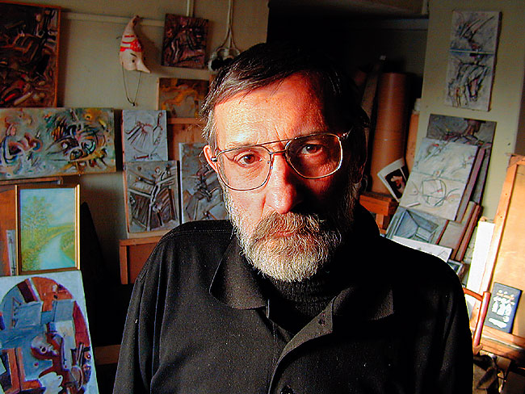
Собственных его работ в сети, к сожалению, немного, и все больше коллажи -
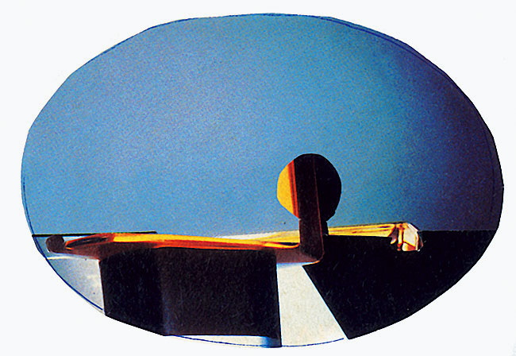
- но это и не так важно. Тот случай, когда работы учеников говорят больше.
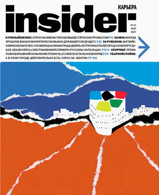
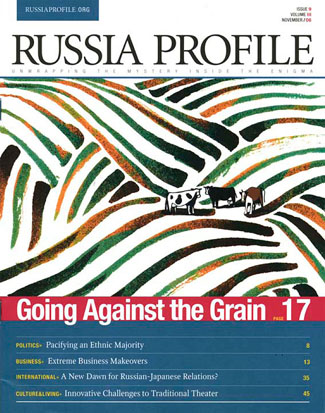
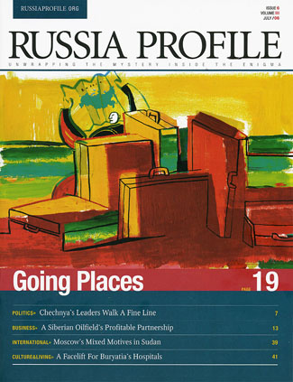
Моя любимая Студия «Щука»:
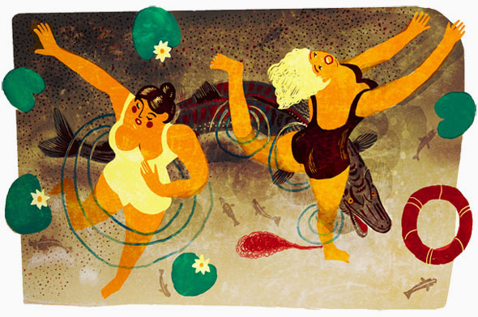
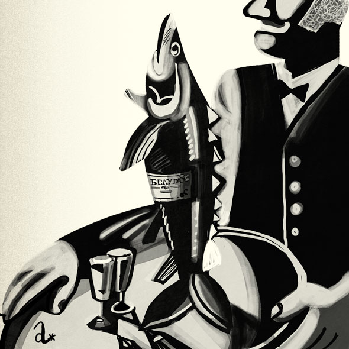
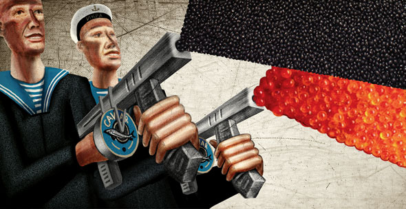
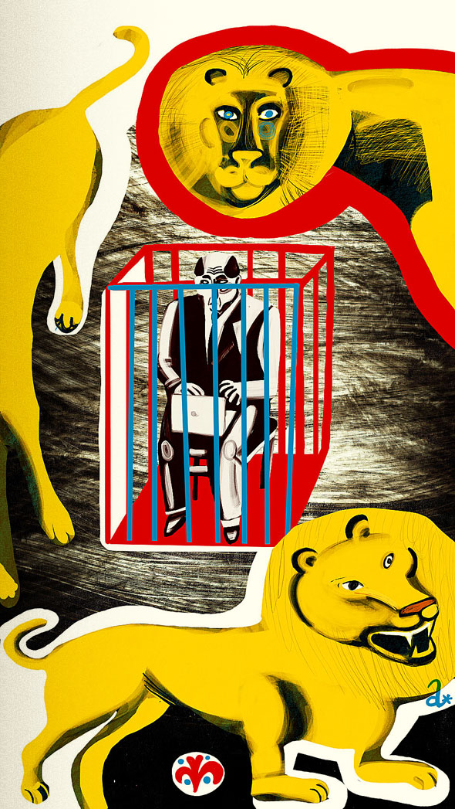
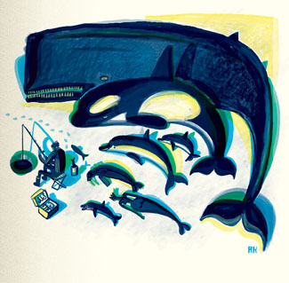
Им я без колебаний отдал русских в цеховском календаре про национальности для Ростелекома
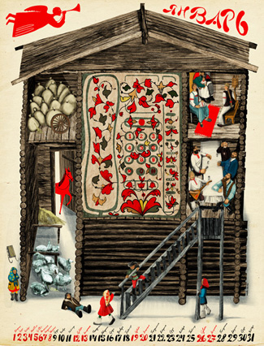
Да, бросается в глаза сходство изобразительных подходов, тычьте пальцем сколько хотите. Я не считаю «стиль» чем-то особенно важным - люди разные (прекрасные), думают по-разному (и думают хорошо) и рассказывают разное (интересно рассказывают); стиль в данном случае только указывает на общее происхождение, никак не компрометируя качество иллюстрации как таковой. И главное, только так и можно сохранить связь времен, другого способа нет. Я, например, мечтал бы принадлежать к такому поколению, быть «одним из», тоже вести родословную от больших русских рисовальщиков начала века. «Держаться корней».
Кстати, большая жалость, что у Щуки не срослось сделать обложку для Леонида Федорова, который сейчас, наверное, ближе всего к выражению той самой «национальной идеи» в музыке (и я не про фольклорные его упражнения). Вот было бы единство упаковки и содержания (возможно, клиенту оно как раз показалось избыточным; чужая душа - потемки). Тут можно посмотреть непринятые обложки.
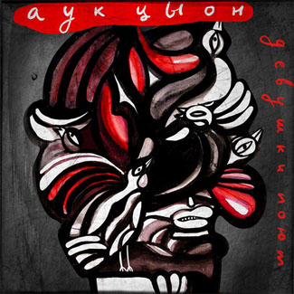
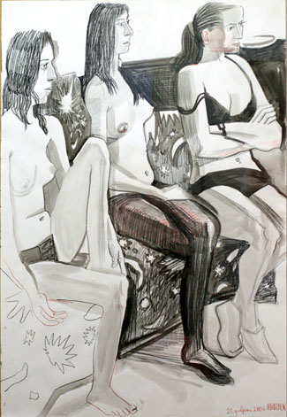
Александр Уткин (см. также здесь) у Ливанова, насколько знаю, непосредственно не учился, но там, видимо, сквозняки такие.
Так вот.
В Галерее на Ленивке (Ленивка, дом 6, примерно напротив Пушкинского) на той неделе открылась выставка Александра Ливанова и Виктора Дувидова. Дувидов, к сожалению, погиб восемь лет назад, но у каждого из нас найдется, не в шкафу, так в подкорке, две-три его детских книжки. Нелишний повод вспомнить и переоткрыть для себя необыкновенного иллюстратора.
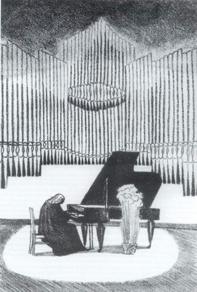
Кроме прочего, он вместе с Маем Митуричем расписал пятнадцать лет назад стены в Палеонтологическом музее - нечеловеческая красота, сходите.
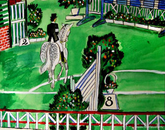
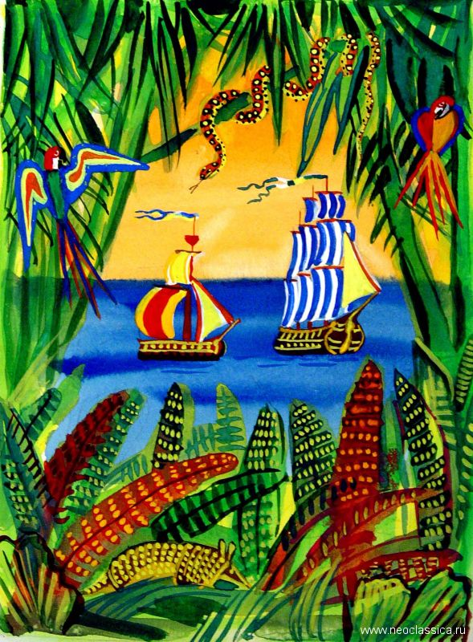
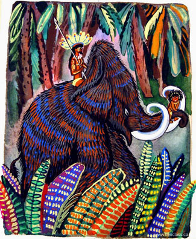
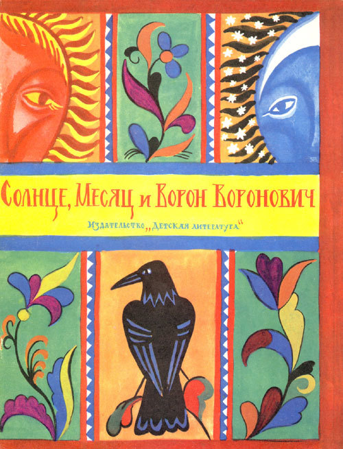
(здесь вся книжка, и еще много драгоценного) Можно говорить или молчать про утерянные секреты мастерства, но жизнерадостность вот эта точно куда-то рассосалась. Не пропустите, кто в Москве.